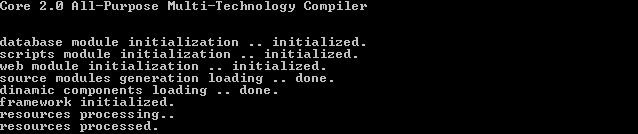
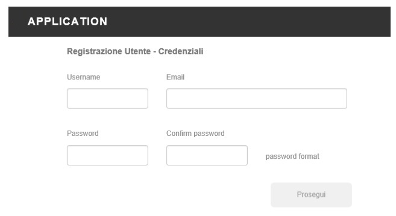
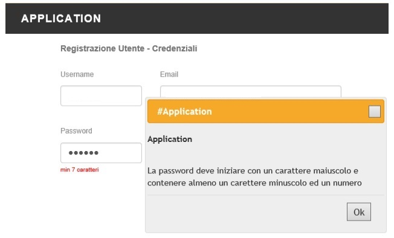
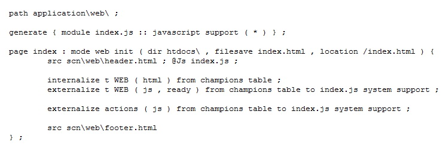

| INTRODUCTION | The implementation of a framework for the Core 3.0 all-purpose compiler is actually an implementation work using the compiler language for the realization of a programming language that is translated into code of other languages. By code we mean instructions and data written even on multiple files and in multiple languages but with a single semantics that of the language implemented. Core 3.0 was born to give the possibility to define new languages, you know this, and it has inside all the instructions for compiling in multiple files and types of languages. So reading, writing, modifying and saving, of the object code. The work of engineering a framework and then implementing it is our job. But having to implement your solutions, we cannot carry out the work other than the collaboration with the client company. We are open to collaboration with any type of company, but companies that already have a research and development department are clearly at an advantage, as they can broaden their goals and inherit our already done research and development work that has cost us 5 years. research and development. Below we will show some concepts illustrated by images, on the framework fully implemented by us bsa 1.0. Bsa stands for (Basic Applications) and is a framework made for the Core 2.0 compiler for demonstration and testing purposes only. |
| FRAMEWORK |
The bsa 1.0 framework for the Core 2.0 compiler deals with the possibility of automating full stack programming for web-based applications. It was therefore decided to create a language whose statements are translated both into code on the front-end side and the corresponding code on the back-end side. It was decided to write a language that, starting from the definition of the database (with its creation scripts), would allow, through a few lines of code, to insert components such as smart-tables and multi-step forms that can be easily programmed for various objectives such as user registration, visualization and modification of data by displaying in tables. The work did not leave us out of dealing with the validation that is linked to the custom types in the definition of the database fields, and also with security. In addition to the implementation of the language, it was necessary to implement versatile libraries for server-client communication. This work of building execution support libraries has been called support engineering by us. You will understand that these are concepts that already distort the way of thinking in software analysis. Creating an ad-hoc language, translating it into your own solutions, and developing execution support libraries, are all concepts that propel you into the world of advanced software engineering. |
| SUPPORT |
We can write just two lines on the support of the bsa 1.0 framework saying that it obviously deals with the management of all possible client server communication errors and communications, therefore viewing of pages, messages through dialogs, change of status and information, then modification of the components made as simple as everything using a string. |
| TECHNOLOGIES |
The technologies in which the language is translated are: Html, Javascript, JQuery, Boostrap, Ajax, Json, PHP, MYSQL |
| MODULES |
The modules of the framework are:
|
| RUNTIME |  |
| COMPONENTS |
The automation of graphics, logos, drawings, graphics goes beyond the types of automation possible with Core 3.0. The bsa 1.0 framework is aimed at automating logical and data processing processes such as data validation and entry into the database, recovery of these, treatment, then visualization and modification. And the preliminary analysis study that we have done has led to the result that the great part of the work is done by the components, such as smart-tables, multi-step forms, and dialog boxes. Having said that, the programming of these components has been automated, which appear as in the following images. |
| FORMS |  |
| DIALOGS |  |
| TABLES | |
| SOURCE |
Wanting to take a look at what a web page code looks like, we can show this example: I would also like to emphasize the beauty and elegance of how the code looks. Here the page foresees the loading of sections, but first of all the relative javascript file is generated with the support system and the code for the smart table (previously defined) is pasted both in the web page, and exported in the javascript page through the support system. By means of these very simple lines of code, the table is ready for use. It is a table linked to the database with actions applicable on individual records and works according to the server-client model or if you want it is an example of front-end, back-end programming. |
| DISCUSSION |
Making a language is strongly recommended by us. Entire applications can be created simply with 200, 500, 1000 lines of code and by a single developer who works, not on multiple files and using multiple languages, but on a single file using a single language. The use of a language makes it possible to have considerable flexibility. In fact, if one day you decide to add components, for example, it would simply be a language upgrade and this applies to all the implementation solutions that you want to automate. The product code, in particular cases, being absolutely readable and modifiable by the developers, can be manually refined after compilation. However, there are technologies that do not lend themselves to creating frameworks. I'm talking about those that allow you to program through graphic and non-textual tools. It is also more difficult, but obviously not impossible, to build a framework on top of another existing commercial framework. Also in this case it is not recommended. Or rather, it is advisable to switch to other technologies. A curiosity. Core 3.0 is also clearly capable of writing ASM code. It could in my opinion be the right starting point for Quantum Programming. I say this because I am sure that many visitors will begin to imagine possible solutions also for problems and technologies unknown to me. |